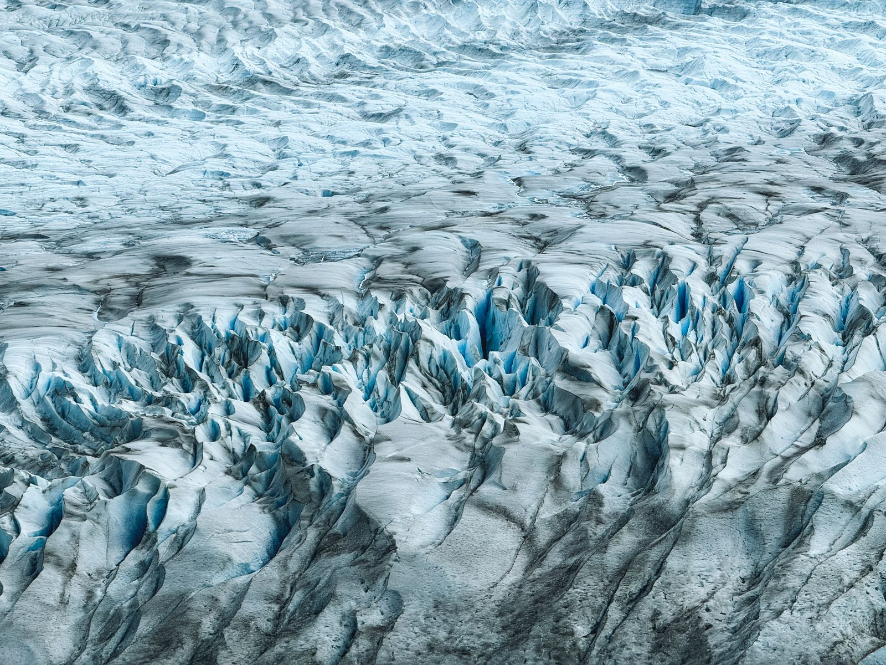

Polar glaciologist & ice-core climate scientist
Depth is time. 800,000 years of climate, read one metre at a time.
I drill, date and interpret ice cores for research institutes, museums and film crews — and I publish the fees, the failure rate and the weather losses alongside the results. The ice keeps the only direct record of the air the Earth used to breathe. My job is to read it without exaggerating it.

The Depth–Age Explorer
0–3,200 MAn ice core is a well of old weather. Snow falls, is buried, and is squeezed into ice; the deeper you go, the older the layer — and the thinner each year has been pressed. Drag the marker down the core and read the log entry a laboratory would write for that depth: how old the ice is, what climate it fell in, and what we measure in it.
Holocene — the current interglacial
The model, in print — because an explorer you can't check is just a picture
This is a teaching model: a composite shaped like a real polar depth–age curve (annual layers thin with depth as the ice is compressed and flows), anchored to the scale of the deepest Antarctic records — the EPICA Dome C core reached about 800,000 years. It is not a named site's published timescale; real timescales are built per core from layer counting, volcanic horizons, gas records and flow models together. Ages here are piecewise-linear between these anchors:
| Depth (m) | Age (yrs BP) | What the anchor marks |
|---|---|---|
| 0 | 0 | This year's snow surface |
| 100 | 450 | Firn becoming ice; bubbles sealing in |
| 400 | 2,600 | Late Holocene |
| 800 | 11,700 | End of the last glacial — the Holocene begins |
| 1,100 | 20,500 | Around the Last Glacial Maximum |
| 1,700 | 58,000 | Mid last glacial |
| 2,200 | 129,000 | Into the last interglacial (Eemian) |
| 2,600 | 245,000 | Earlier glacial cycles |
| 2,900 | 420,000 | Four cycles down |
| 3,100 | 640,000 | Layers now millimetres thin |
| 3,200 | 800,000 | Near bedrock — the bottom of the classic record |
And the eruptions the explorer listens for — sulfate spikes at these modelled depths:
| Eruption | Year | Modelled depth | Why it matters |
|---|---|---|---|
| Pinatubo | 1991 | ≈8 m | Satellite-era check on the youngest ice |
| Agung | 1963 | ≈14 m | Mid-20th-century marker |
| Krakatau | 1883 | ≈32 m | One of the largest signals of the 19th century |
| Tambora | 1815 | ≈47 m | Caused the "Year Without a Summer", 1816 |
| Unknown eruption | 1809 | ≈48 m | A major eruption still not matched to a volcano |
| Samalas | 1257 | ≈145 m | Largest sulfate signal of the last 2,000 years |
Services & fees
RATES · EURWhat moves the price
Logistics, not labour. A Twin Otter hour, a fuel cache flown in a season early, medevac cover, a −80 °C freight chain that cannot break once: polar fieldwork is mostly aeroplanes and weather. Analysis is the cheap part of this trade — getting the ice home still frozen is not. Every quote separates the two, so you can see exactly what a storm day costs before you've spent it.
Current & recent work
REGISTER"Freya's rule was that every number on the wall had to survive a glaciologist reading it over a visitor's shoulder. It made the gallery slower to build and impossible to argue with."
Planning a season, a core, or a gallery?
CONTACTField seasons are planned 12–18 months ahead; analysis slots open quarterly. Tell me what decision the ice has to feed, and I'll tell you honestly whether a core can feed it.